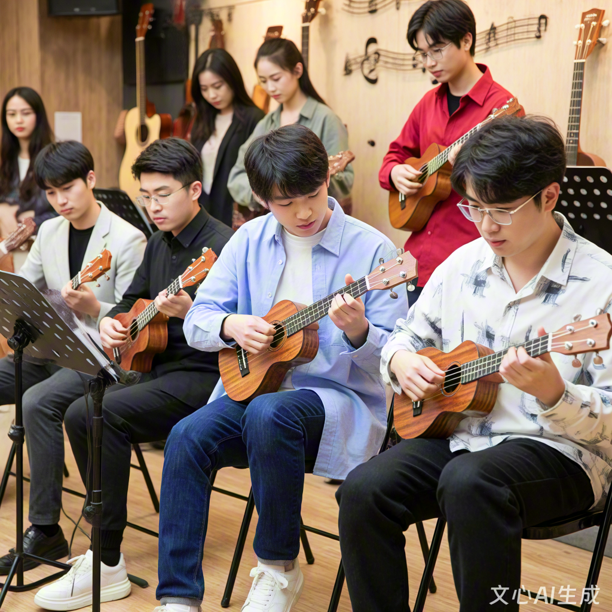

社团简介 | 活动安排 | 风采展示 | 社员故事 | 在线报名
尤克里里社成立于2018年，是学校最具活力的乐器类社团之一，以“用四弦传递快乐，用音乐连接你我”为核心宗旨，致力于为所有热爱尤克里里、喜欢轻松音乐的同学搭建交流与成长的平台。
社团始终坚持“零基础友好”原则，每周定期开展基础教学活动，从持琴姿势、和弦指法到简单弹唱，由经验丰富的学长学姐手把手指导，让你在短时间内就能弹奏出自己喜欢的歌曲。
除了常规教学，社团还会定期举办校园弹唱会、音乐沙龙、户外演奏、跨社团合作演出等丰富活动，让社员在实践中锻炼自己，展示才华。
社团拥有完善的组织架构，设教学部、活动部、宣传部、后勤部四大部门，各部门分工明确、协作高效，确保每一项活动都能顺利开展。
在这里，音乐是桥梁，快乐是底色。让我们一起用四弦琴，弹奏属于我们的青春乐章！
为了让大家更好地了解尤克里里社的日常，本学期计划安排如下几项主要活动。 具体时间可能会根据学校统一安排略作调整，详情请关注社团通知。
| 尤克里里社 2025 年春季学期活动安排表 | |||
|---|---|---|---|
| 活动名称 | 活动时间 | 活动地点 | 负责人 |
| 新成员见面会 | 3月10日 19:00-21:00 | 大学生共享活动中心402室 | 谢宸 |
| 尤克里里基础教学公开课 | 3月17日 19:00-21:00 | 傅明 | |
| 校园草地弹唱会 | 4月21日 14:00-17:00 | 操场东侧草坪 | 白薇 |
| 户外演奏实践：公园公益演出 | 6月1日 9:00-11:30 | 城市中央公园 | 洛川 |
| 期末专场音乐会 | 6月23日 19:00-21:00 | 大学生活动中心 大礼堂 | 陈落 |
上表仅列出了部分代表性活动，日常还会有小型即兴合奏、经验分享等活动， 欢迎有想法、有创意的同学参与策划。
下面是一张往届社员们排练的照片示意。点击图片，可以查看更详细的活动介绍页面。
图中为上学期校园音乐会之前的新曲目排练，尤克里里社成员的集体练习场景。 平时的训练与排练，都是在为在正式演出做充足的准备。
下面是一个社员们一同排练的宣传小视频
大一刚入学时，小傅总躲在教室角落，连回答问题都脸红。偶然被室友拉进尤克里里社，第一次排练时，他抱着琴的手一直在抖。学姐没催他表演，只是笑着说：“先听我们弹首《遇见》吧。” 后来每周三晚，大家围坐成圈，有人忘和弦就一起小声提醒，有人跑调就集体跟着笑。三个月后，社团办 “草坪弹唱夜”，小傅竟被推上台唱了《小情歌》。弦没按准，声音也发颤，但台下的掌声比琴声还暖。现在他敢主动带着新社员练琴了 —— 原来音乐真的能把胆怯泡成勇气。
高三那年，小白摔断过手指，医生说 “别碰乐器”，她把尤克里里锁进了柜子。进大学看到尤克里里社招新，犹豫了很久才报名。第一次按 F 和弦，旧伤处传来刺痛，指尖的茧磨破了好几次。 社长发现后，每天陪她练简化版指法，还找了轻重量的琴让她适应。半年后，小白在汇报演出中弹了《平凡之路》，手指虽然还会累，但琴弦震动的共鸣里，藏着比疼痛更重的东西。现在琴头贴满了社员写的便签，最显眼那张是：“破茧的声音，比琴声还动听。”
作为机械系学生，小陈每天和公式、图纸打交道，压力大时总失眠。加入尤克里里社是个意外 —— 社团招新时，学长用四弦弹出了《卡农》，那声音像给紧绷的神经松了弦。 刚开始练琴总被室友笑 “理工男玩浪漫”，但他发现，推导公式卡壳时，弹十分钟《彩虹》就能理清思路。去年期末周，社团在自习室楼下办 “深夜弹唱角”，小陈抱着琴弹了首改编的《成都》，周围此起彼伏的 “再来一首” 里，有同学说：“这比咖啡提神。” 原来音乐和公式一样，都能让人在混沌里找到秩序。
如果你也喜欢音乐，期望在大学生活中拥有一段与尤克里里相关的美好回忆， 欢迎加入我们，一起在琴弦上演奏青春的旋律。
请认真填写以下信息，确保联系方式准确无误。 提交后，社团会通过电话或短信的方式通知面谈或试音时间。
提交表单后，如需修改信息，可以再次填写并提交最新的一份。
校园尤克里里社 · 2025 招新示例网页
本页面仅作为 HTML 基础实验的示例代码。